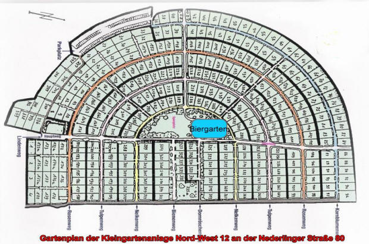

Unsere Kleingartenanlage liegt in Nederling, im Norden Münchens zwischen Nederlinger Strasse und
Wintrichring.
Gegründet 1941, besteht sie jetzt seit über 70 Jahren.
Aktuell umfasst die Anlage 346 Parzellen, welche unseren Biergarten im Herzen der Anlage umgeben.
Wir sind Mitglied im Kleingartenverband München e.V. und dem Landesverband bayerischer Kleingärtner e.V.
